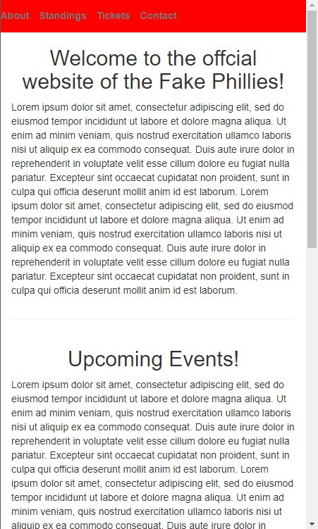
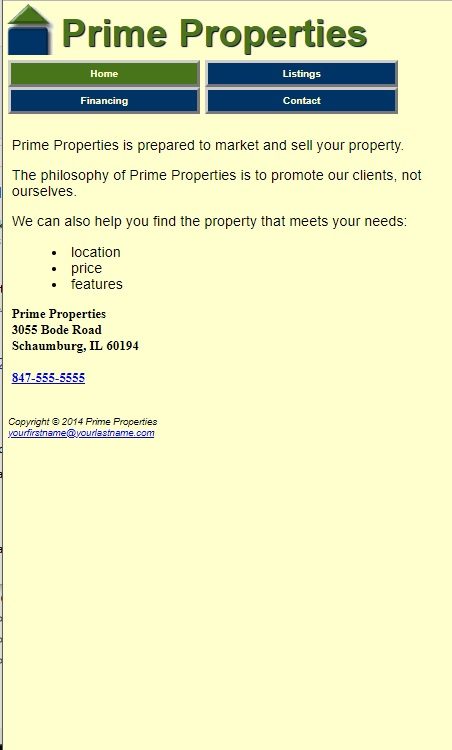

Click here for Flexbox Page
Click here for Skeleton Resume 
Click here for Bootstrap 
Click here for Sass

Progress meter:
Personally, Using skeleton for the first time was a little complicated, or atleast a lot to get used to. I will say that once I messed around with the coding, I got the hang of it and I do think it's cool that it moves with the width of the screen.
I think using flexbox is much easier than using something like skeleton, just seemes easier to code and understand.
I think bootstrap is a cool tool to use, the css files can get pretty complex though. That's the only negative thing that I have to say.
Sass seems to be a really cool tool if you use a lot of the same coding over and over again, which will probably be the case for most company websites.